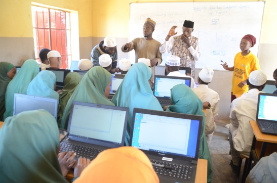
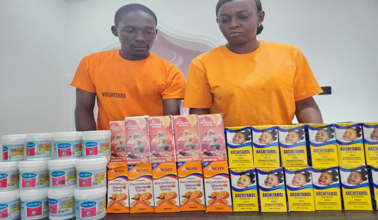
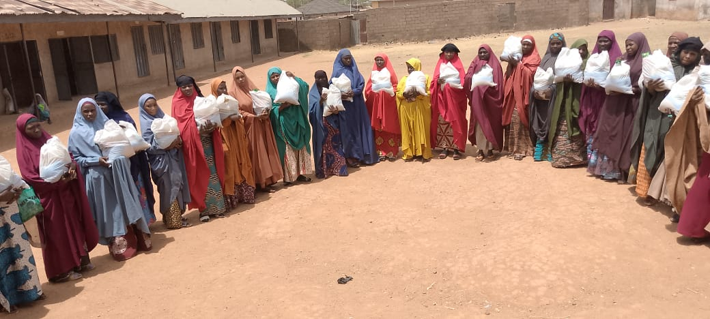

Digital Employability Skills
The Orphanage Care and Support Foundation (OCSF) is committed to equipping girls, women, youths at risk and special needs persons with essential digital employability skills. We aim to bridge the digital divide by providing comprehensive training programs that enhance their ability to thrive in a technology-driven world.
Our dedicated volunteers work tirelessly to raise awareness about these opportunities and ensure that everyone who is interested can benefit from this crucial training, paving the way for a brighter and more independent future.
View Trainings
Health Care Programs
Good health and well-being are fundamental to a better life, yet many families in our community struggle to access basic healthcare services. Our Free Medical Care Program is dedicated to providing free medical check-ups, treatments, medications, and even surgeries to those who need them most.
Our caring team of doctors, nurses, and volunteers works tirelessly to ensure that every person receives the attention and care they deserve. Through our extensive medical outreaches, we offer essential health services that are making a significant impact in these vulnerable communities.
Families who once couldn't afford medical care are now receiving the help they need, and children are able to grow up healthy and strong. We are open to partnerships and support to reach an even larger number of individuals.
Partner With Us
Widows & Orphan Support
In many African communities, men traditionally serve as the primary breadwinners. When they pass away, their widows often face overwhelming challenges, struggling to provide for their children and themselves. This reality leaves many women and children vulnerable, with limited access to the resources and support they desperately need.
Our organization steps in to bridge this gap, offering crucial support not only to widows but also to other vulnerable women in our communities. Our program provides financial aid, educational opportunities, and emotional support, ensuring these individuals can lead better lives.
Through our dedicated efforts, we have witnessed remarkable transformations. Women who once felt helpless are now acquiring new skills and starting small businesses. Our initiatives include addressing gender-based violence, providing skills acquisition, empowering women, and offering trauma care.
Get Involved
Free Education
Quality education is the cornerstone of a brighter future. At OCSF, we believe that every child deserves access to quality education regardless of their economic circumstances. Our Free Education Program provides free tuition, school supplies, and dedicated academic support for children in need.
Through our free school initiative, we have helped hundreds of children access education they would otherwise not have had. Our volunteer teachers and academic mentors work with dedication to ensure every child receives the attention they deserve and achieves their academic potential.
We are open for partnerships and support to ensure we reach more children and make a larger impact. Together, we can build a more educated and empowered generation.
Support Education